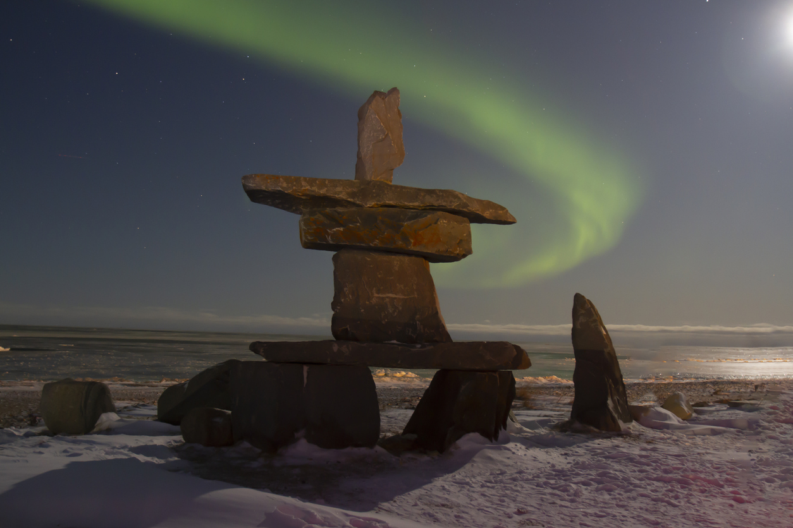

About Ruth
Beginnings
In my early years I was born and lived in The North West Territories. My father was a bush pilot for many years and often we would fly out over the subartic, land somewhere and I would wonder if anyone had ever been to that particular place before. Sometimes at night I would look out into the blackness below the starriest of skies, being so far from any town or city, and contemplate how many miles/kilometers there were before any sign of human life in any direction.
Back Arctic to Tropic - 2008